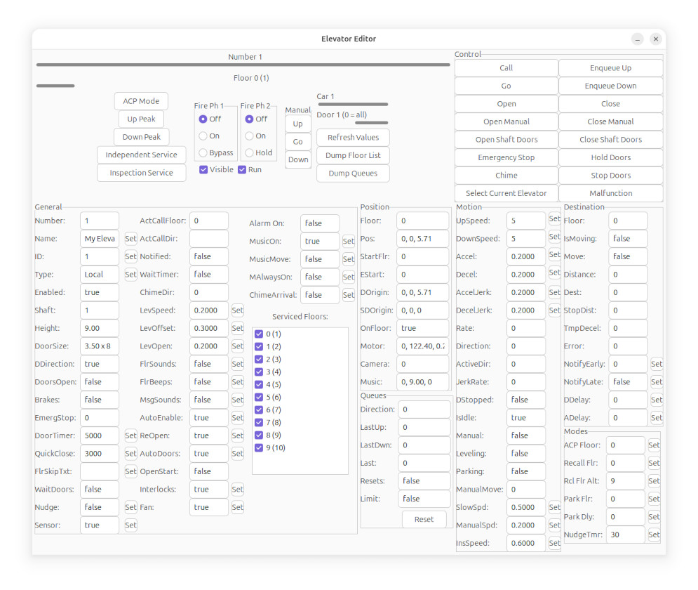

The Elevator Editor
The Elevator Editor is an interface into the
inner workings of Skyscraper's elevator system, and is very
elaborate.
Use this window to modify and operate the simulator's elevators
directly.

On the top left, the Number bar selects the elevator number.
Right below it is the Floor bar, which selects the floor (and
shows the ID of the floor also).
Control Section:
Call: call elevator to current floor
Go: go directly to specified floor
Open: open elevator doors
Close: close elevator doors
Open Manual: manually open elevator doors
Close Manual: manually close elevator doors
Enqueue Up: queues the selected floor on the specified
elevator in the Up direction
Enqueue Down: queues the selected floor on the specified
elevator in the Down direction
Select Current Elevator selects the elevator the user is
currently riding in.
Chime plays the chime sound at the currently selected
floor.
Modes:
ACP Mode: anti-crime protection, causes the elevator to
stop at a specified floor before continuing
Up/Down Peak: sends elevators to the bottom or top of the
assigned floors, to prioritize peak times
Independent service: enables or disables independent
service
Inspection service: enables or disables inspection service
Fire Phase 1 can either be Off, On, or Bypass
Fire Phase 2 can either be Off, On or Hold.
The Visible checkbox determines if the elevator should be
visible. The Run checkbox turns on and off the
elevator.
Manual specifies the direction of manual movement, mostly
for Inspection Service mode. To operate inspection mode,
first enable it, and then click Go, and either Up or Down.
General Parameters:
Number: elevator number
Name: elevator name
ID: elevator ID, mostly used for Destination Dispatch
Type: type of elevator, such as Local or Express
Enabled: shows if the elevator is enabled or not
Shaft: the assigned shaft of the elevator
Height: the calculated height of the elevator car
DoorSize: the calculated size of the car doors, deprecated
DDirection: the direction the car doors face, and is
deprecated
DoorsOpen: shows if the car doors are open or not.
Brakes: shows if the elevator's brakes are enabled or not.
EmergStop: shows the internal status of Emergency Stop
DoorTimer: the door close timer, in the example, is set to
5 seconds
QuickClose: the timer used in quick-close mode, and in the
example is set to 3 seconds
FlrSkipTxt: Floor skip text, shown on the elevator
indicator when skipping floors, used for things such as express
levels.
WaitDoors: set to true for the MoveElevatorToFloor() function to
wait for the doors to close before running
Nudge: shows or changes the status of nudge mode
Sensor: enables or disables the door sensor
ActCallFloor: the Active Call Floor
ActCallDir: the Active Call Direction
Notified: shows if floor arrival notifications have been
performed
WaitTimer: true if elevator is waiting for the
arrival/departure timers to finish before moving
ChimeDir: the direction the elevator last chimed
LevSpeed: the leveling speed of the elevator
LevOffset: the leveling offset
LevOpen: determines the distance from the floor the
elevator doors open when leveling
FlrSounds: enable or disable floor arrival sounds
FlrBeeps: enable or disable floor beeps
MsgSounds: enable or disable message sounds
AutoEnable: true if interior objects should automatically
be enabled/disabled
ReOpen: true if elevator should reopen doors if the same
floor is selected
AutoDoors: if true, doors are automatic, set to false for
manual elevators
OpenStart: if true, open elevator doors on start
Interlocks: enables or disables interlocks
Fan: enables or disables the car fan
Alarm on: if true, the alarm is sounding
MusicOn: play elevator music
MusicMove: true if music should only play during move
MAlwaysOn: MusicAlwaysOn, true if music should always be
played, and the on/off state should be volume-based
ChimeArrival: set to true for elevator to always chime on
arrival, instead of just when responding to a hall call
The Serviced Floors section allows you to change the
serviced floor list of the elevator.
Position Parameters
Floor: the floor the elevator car is n
Pos: the elevator's position in 3D space
StartFlr: the elevator's starting floor
EStart: the internal elevator starting position
DOrigin: not used anymore, door origin
SDOrigin, not used, shaft door origin
OnFloor: true if elevator is on a floor
Motor: position of motor at top of shaft
Camera: camera position
Music: position of elevator music sound emitter
Queues Parameters
Direction: queue processing direction
LastUp: last route added to up queue
LastDwn: last route added to down queue
Last: last queue direction
Resets: true if queue resets are enabled
Limit: LimitQueue, set to true to only allow floor
selections in the same queue direction
Reset - resets both up and down queues
Motion Parameters
UpSpeed: elevator up speed
DownSpeed: elevator down speed
Accel: acceleration
Decel: deceleration
AccelJerk: acceleration jerk rate
DecelJerk: deceleration jerk rate
Rate: elevator rate
Direction: direction of travel
ActiveDir: active direction of travel (doesn't change
during slowdown)
JerkRate: current jerk rate
DStopped: true if doors are stopped
IsIdle: true if elevator is idle
Manual: true if a manual elevator
Leveling: true if elevator is leveling
Parking: true if elevator is parking
ManualMove: 0 if manual movement is off, otherwise -1 or 1
SlowSpd: door slow speed
ManualSpd: door manual speed
InsSpeed: inspection mode speed
Destination Parameters
Floor: destination floor
IsMoving: true if elevator is moving
Move: true to enable elevator motion
Distance: distance in feet to destination floor
Dest: altitude of destination floor
StopDist: stopping distance in feet
TmpDecel: internal temporary deceleration value
Error: motion error offset
NotifyEarly: status of the NotifyEarly feature
NotifyLate: status of the NotifyLate feature
DDelay: departure delay
ADelay: arrival delay
Modes Parameters
ACP Floor: the floor used for Anti-Crime Protection (ACP)
mode
Recall Flr: recall floor
Rcl Flr Alt: alternate recall floor
Park Flr: parking floor
Park Dly: parking delay, number of seconds to wait before
parking elevator, if idle
NudgeTmr: nudge timer, time in seconds to wait before
enabling nudge mode